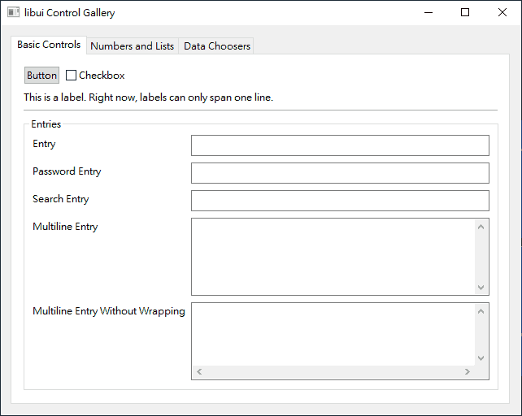
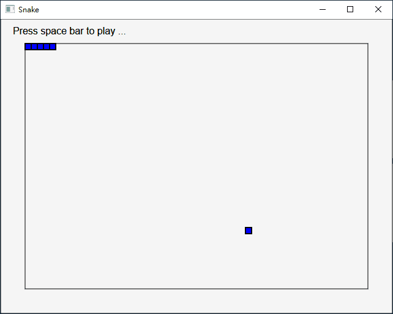

用 PHP 網住程式
關於 PHP
1995 年，Rasmus Lerdorf 在大學有項研究計畫，需要透過網頁蒐集資料，為了方便完成工作，興起了能將 CGI 程式內嵌在 HTML 網頁執行的想法，而開發 PHP/FI 腳本語言，名稱取自去年 Rasmus Lerdorf 為 C 語言製作的一套 CGI 程式庫：Personal Home Page Toolkit。這時功能有限，比較像自己工作方便的小玩意兒，經歷兩年多的測試與調整，才正式發布 PHP/FI 2.0 給大家使用。
1997 年，Zeev Suraski 和 Andi Gutmans 為 PHP/FI 重寫剖析器：Zend（取自兩人的名字），除了提升性能以及穩定性，還提供模組化架構，讓 PHP 更容易擴充與維護。Rasmus Lerdorf 開始與兩人合作，改寫 PHP/FI，並改名為 PHP: Hypertext Preprocessor（重點在縮寫又是 PHP），隔年正式發布 PHP 3，也就是現今 C 語言的程式設計手法，搭配 Perl 的資料型態的腳本語言。
2000 年，Zend Engine 1.0 正式發布，直接使用該引擎的 PHP 4 問世。
2004 年，引進物件導向資料架構的 Zend Engine 2 正式發布，推出 PHP 5。
2010 年，原本計畫 PHP 6 起改用 Unicode 字元編碼，但帶來的困擾與性能降低等問題，官方都找不到解法，只好宣布放棄。
2015 年，優化執行性能的 Zend Engine 3 發布，推出 PHP 7，有些特性不相容 PHP 5，造成許多企業不敢升級。尤其外包做出來的 PHP 網站，企業本身往往沒能力調整相容性問題。
2019 年，已延長技術支援期限的 PHP 5.6，終於還是到了不再提供安全性更新的日子，全面升級 PHP 7.x 的時代來臨。（但還有企業繼續用 2008 年便不再維護的 PHP 4 架站就是了）
關於 Thread Safe 版
Windows 版的 PHP 從 5.2 開始，有分 None Thread Safe 和 Thread Safe 兩種版本。
早先 PHP 的架構，是在 Linux 透過 CGI 與 Apache 接合，後來移植到 Windows 同樣透過 CGI 與 IIS 接合時，大家發現 PHP 的表現很差。這是因為 Windows 的多工採 multi process，不像 UNIX 和 CGI 都採 multi threaded，所以在 Windows 跑 CGI 會因為不斷開新的行程，耗盡系統資源。
那時 PHP 不適合在 Windows 跑，所以想在 Windows 架動態網頁的人，都用 ASP 或 JSP。於是 PHP 改透過 ISAPI 與 IIS 接合，推出 Thread Safe 版本。取這個名字的原因，是要另外檢查多行程的安全性問題，所以還是比 Linux 版的 PHP 慢，但至少讓 PHP 在 Windows 不會輸給 ASP 和 JSP 了。
後來 Microsoft 為此推出 FastCGI，讓 PHP 能在 Windows 透過 CGI 與 Apache 接合，速度比透過 ISAPI 還快。
結論：用 IIS 的話才用 Thread Safe，否則用 None Thread Safe 就好。
因此我下載 Non Thread Safe 的版本，它透過 FastCGI 執行，速度比透過 ISAPI 執行的 Thread Safe 版快。
只有用 IIS 架 HTTP Server，才需要下載 Thread Safe 的版本。不只是因為保護多行程安全而已，而是 IIS 天生和 CGI 架構，所以 PHP 透過 ISAPI 與 IIS 結合，還是比透過 FastCGI 與 IIS 結合來得快。但如果用 Apache 架站的話，就選 Non Thread Safe 版的 PHP，因為 Windows 的 Apache 是用 FastCGI 對外結合的。
PHP 7 廢除項目
．Removed Extensions and SAPIs
．Deprecated features in PHP 7.0.x
．Deprecated features in PHP 7.1.x
．Deprecated features in PHP 7.2.x
．Deprecated features in PHP 7.3.x
Removed Extensions and SAPIs
Removed Extensions: ereg、mssql、mysql、sybase_ct。
Removed SAPIs: aolserver、apache、apache_hooks、apache2filter、caudium、continuity、isapi、milter、nsapi、phttpd、pi3web、roxen、thttpd、tux、webjames。
Deprecated features in PHP 7.0.x
PHP 4 style constructors: PHP 4 style constructors (methods that have the same name as the class they are defined in) are deprecated, and will be removed in the future. PHP 7 will emit E_DEPRECATED if a PHP 4 constructor is the only constructor defined within a class. Classes that implement a __construct() method are unaffected.
Static calls to non-static methods: Static calls to methods that are not declared static are deprecated, and may be removed in the future.
password_hash() salt option: The salt option for the password_hash() function has been deprecated to prevent developers from generating their own (usually insecure) salts. The function itself generates a cryptographically secure salt when no salt is provided by the developer - therefore custom salt generation should not be needed.
capture_session_meta SSL context option: The capture_session_meta SSL context option has been deprecated. SSL metadata is now available through the stream_get_meta_data() function.
LDAP deprecations: The function ldap_sort() has been deprecated.
Deprecated features in PHP 7.1.x
ext/mcrypt: The mcrypt extension has been abandonware for nearly a decade now, and was also fairly complex to use. It has therefore been deprecated in favour of OpenSSL, where it will be removed from the core and into PECL in PHP 7.2.
Eval option for mb_ereg_replace() and mb_eregi_replace(): The e pattern modifier has been deprecated for the mb_ereg_replace() and mb_eregi_replace() functions.
Deprecated features in PHP 7.2.x
Unquoted strings: Unquoted strings that are non-existent global constants are taken to be strings of themselves. This behaviour used to emit an E_NOTICE, but will now emit an E_WARNING. In the next major version of PHP, an Error exception will be thrown instead.
png2wbmp() and jpeg2wbmp(): The png2wbmp() and jpeg2wbmp() functions from the GD extension have now been deprecated and will be removed in the next major version of PHP.
INTL_IDNA_VARIANT_2003 variant: The Intl extension has deprecated the INTL_IDNA_VARIANT_2003 variant, which is currently being used as the default for idn_to_ascii() and idn_to_utf8(). PHP 7.4 will see these defaults changed to INTL_IDNA_VARIANT_UTS46, and the next major version of PHP will remove INTL_IDNA_VARIANT_2003 altogether.
__autoload() method: The __autoload() method has been deprecated because it is inferior to spl_autoload_register() (due to it not being able to chain autoloaders), and there is no interoperability between the two autoloading styles.
track_errors ini setting and $php_errormsg variable: When the track_errors ini setting is enabled, a $php_errormsg variable is created in the local scope when a non-fatal error occurs. Given that the preferred way of retrieving such error information is by using error_get_last(), this feature has been deprecated.
create_function() function: Given the security issues of this function (being a thin wrapper around eval()), this dated function has now been deprecated. The preferred alternative is to use anonymous functions.
mbstring.func_overload ini setting: Given the interoperability problems of string-based functions being used in environments with this setting enabled, it has now been deprecated.
(unset) cast: Casting any expression to this type will always result in NULL, and so this superfluous casting type has now been deprecated.
parse_str() without a second argument: Without the second argument to parse_str(), the query string parameters would populate the local symbol table. Given the security implications of this, using parse_str() without a second argument has now been deprecated. The function should always be used with two arguments, as the second argument causes the query string to be parsed into an array.
gmp_random() function: This function generates a random number based upon a range that is calculated by an unexposed, platform-specific limb size. Because of this, the function has now been deprecated. The preferred way of generating a random number using the GMP extension is by gmp_random_bits() and gmp_random_range().
each() function: This function is far slower at iteration than a normal foreach, and causes implementation issues for some language changes. It has therefore been deprecated.
assert() with a string argument: Using assert() with a string argument required the string to be eval()'ed. Given the potential for remote code execution, using assert() with a string argument has now been deprecated in favour of using boolean expressions.
$errcontext argument of error handlers: The $errcontext argument contains all local variables of the error site. Given its rare usage, and the problems it causes with internal optimisations, it has now been deprecated. Instead, a debugger should be used to retrieve information on local variables at the error site.
read_exif_data() function: The read_exif_data() alias has been deprecated. The exif_read_data() function should be used instead.
Deprecated features in PHP 7.3.x
Case-Insensitive Constants: The declaration of case-insensitive constants has been deprecated. Passing TRUE as the third argument to define() will now generate a deprecation warning. The use of case-insensitive constants with a case that differs from the declaration is also deprecated.
Namespaced assert(): Declaring a function called assert() inside a namespace is deprecated. The assert() function is subject to special handling by the engine, which may lead to inconsistent behavior when defining a namespaced function with the same name.
Searching Strings for non-string Needle: Passing a non-string needle to string search functions is deprecated. In the future the needle will be interpreted as a string instead of an ASCII codepoint. Depending on the intended behavior, you should either explicitly cast the needle to string or perform an explicit call to chr(). The following functions are affected: strpos(), strrpos(), stripos(), strripos(), strstr(), strchr(), strrchr(), stristr().
Strip-Tags Streaming: The fgetss() function and the string.strip_tags stream filter have been deprecated. This also affects the SplFileObject::fgetss() method and gzgetss() function.
Data Filtering: The explicit usage of the constants FILTER_FLAG_SCHEME_REQUIRED and FILTER_FLAG_HOST_REQUIRED is now deprecated; both are implied for FILTER_VALIDATE_URL anyway.
Image Processing and GD: image2wbmp() has been deprecated.
Internationalization Functions: Usage of the Normalizer::NONE form throws a deprecation warning, if PHP is linked with ICU ≥ 56.
Multibyte String: The following undocumented mbereg_*() aliases have been deprecated. Use the corresponding mb_ereg_*() variants instead. mbregex_encoding(), mbereg(), mberegi(), mbereg_replace(), mberegi_replace(), mbsplit(), mbereg_match(), mbereg_search(), mbereg_search_pos(), mbereg_search_regs(), mbereg_search_init(), mbereg_search_getregs(), mbereg_search_getpos(), mbereg_search_setpos().
ODBC and DB2 Functions (PDO_ODBC): The pdo_odbc.db2_instance_name ini setting has been formally deprecated. It is deprecated in the documentation as of PHP 5.1.1.
PHP 是最好的網站程式設計語言
一種嘲諷 PHP 程式設計員的用語
或許你聽過「PHP 是世界上最好的語言」，但這是大家用來嘲諷 PHP 開發者的玩笑話，並不是真心在說 PHP 最好。
差不多快 2010 年代，Ruby on Rails 及 Django 等其它腳本語言的 Web 框架興起，挑戰 PHP 霸主地位時，PHP 社群不甘示弱，開始爭誰才是最好的！
寫 PHP 的，程式設計功力大多來講並不深厚，基本上就是網頁設計師為了寫伺服端功能，才學著用的，他們的專業只放在網站身上，對於怎樣設計電腦應用軟體、深入控制作業系統不太關心。而 Ruby on Rails 和 Django 通常都是 Ruby 和 Python 高手，早已熟練寫電腦應用程式，現在為了寫網站程式，才用這些框架，程式設計功力深厚許多。於是 PHP 社群這些網頁設計師們，在與這群駭客爭辯過程中，越來越顯得自己技術較低，開始歇斯底里地用：「反正 PHP 是世界上最好的語言，不管你怎麼說都…」口氣爭辯，於是「PHP 是世界上最好的語言」成了程式設計高手用來嘲諷 PHP 程度不夠，卻自認為天下第一的梗。
當然，在 2000 年代，也有些程式功力深厚的程式設計師，選擇用 PHP 寫伺服端網頁。但在 2010 年代有 Ruby on Rails 和 Django 之類的 Web 框架可用後，大半都從 PHP 跳過去了～
自覺引據官方說的話
那為什麼 PHP 社群會說出「PHP 是世界上最好的語言」這句話呢？因為 PHP 官方 FAQ 文件《PHP and other languages》，確實說過類似的話：
PHP is the best language for web programming, but what about other languages?
你知道的，在討論區引據時，不會先查得清楚再寫，而會把印象中的事表達出來。於是「PHP 是最好的網站程式設計語言」就引據成「PHP 是最好的語言」，對於只寫網站程式設計的 PHP 網頁程式設計師來說，兩句話意思確實是一樣的，我想他們也不覺得自己說錯，只是看在真正的程式設計師眼裡覺得可愛。
很好、但不是最好
總之，PHP 是連網頁設計師都學得起來、而且也願意去學的程式語言，因為它主要就是用來設計動態網頁程式，不是設計整台伺服器系統的網路資料運作，簡單易懂。
當設計動態網頁程式已經滿足不了商務需求，變得是在設計網站應用程式了，改用 Ruby on Rails 會更快完成工作，但這議題已經進階了，甚至與有點平面設計性質的網頁設計師無關，屬於網站工程師的工作。
對初學程式設計的人來說，PHP 是很好上手的程式語言，只需要學一下很 Perl 的 C 語言，會用 var、if、foreach、while、function，然後從頭到尾呼叫函式來表現想要的動態網頁功能就好。但對專業的人來說，PHP 的函式庫規劃得相當糟糕，不一致的函式命名格式（有的用 _ 底線區隔單字有的不用）、不一致的參數位置排放（例如陣列有的放前面有的放後面）。好不好學、易不易用當然很重要，但當你學會用時，發現沒有規律記不起來，便覺得 PHP 難記難用。
PHP 是最好的「網站（全球資訊網；WWW）」程式設計語言，但絕對不是「世界」上最好的程式語言！Rasmus Lerdorf 開發 PHP/FI 的初衷，並不是為了發明自己心目中更理想的程式語言（我猜他覺得 C 語言就很理想了），而是一個實用就好的開發工具。因此整個 PHP 並不講究語法的創新與進步，只講究 PHP 能做哪些事、做得好不好。因此 PHP 是只顧東拚西湊一堆函式、且不加思索就放進來的語言，在這門語言身上是找不到優雅和藝術的，反而有點粗暴和蠻橫。但正如角色扮演遊戲有法師有補師，程式設計界也有個性像戰士一樣，喜歡 PHP 這樣粗曠、豪爽的語言！
不是最好，但真的很好
PHP 絕對稱不上最好：「你怎能期待一門不在乎自己語法是否優美、反而以凌亂為編寫風格的程式語言，會是世上最好的？」但依然是很好的語言，甚至拿來跟物件導向的爪哇語言比，也會覺得 PHP 是很好的語言。
爪哇語言雖然有史詩級的 API 可用，類別庫也設計得很有規律（在還沒 NIO 2 和 Lambda 時），用直覺就能預測該怎樣操作物件功能。但主功能的表現略嫌低階，經常要操作次功能解決零零碎碎的細節問題。比如儲存 XML 後，會發現很多細節沒做好，編碼、元素順序、縮排…於是你得繼續翻 API 找看看怎樣設定這些瑣事。類似的情形在爪哇語言多得數不清，很少能「一鍵搞定」。更別說要處理這些瑣事的功能不在同一個類別，要用另一個類別搭配，又更麻煩了，就跟簡單買包菸，得帶身分證和健康檢查報告一樣麻煩。
PHP 雖然函式庫設計得凌亂，但每個函式的功能都是站在使用者需求貼心設計，像儲存 XML 就是「一鍵搞定」，它會判斷你可能想要的編碼、是否要元素順序、是怎樣的縮排格式…產生令人滿意的 XML 檔案，除非你想搞怪才找進一步設定的函式。
憑著這點，PHP 確實是很好的程式語言，它不是像 Ruby 在功能的操作上貼心，而是在功能的表現上貼心。沒有誰優誰拙，有不同選擇，才能迎合不同的人使用，我只是想說 PHP 雖然不是最好，但依然是很好的程式語言。大多數人不知道 PHP 能做的事比他們所想的還要多，你只能忍受他們嘲諷說：「PHP 是世界上最好的語言。」然而只要繼續努力用 PHP 解決大大小小問題，累積自己的程式設計經驗，當他們看到你用 PHP 解決問題又快又準，就會閉嘴了，彷彿看到神人一樣，一種跟看到駭客截然不同的際遇…
結語
握好你的刀，直接用力砍下去，展現你不用暴擊、不用 MP，就能秒殺怪物的本事。在旁的蟒蛇法師和爪哇補師羨慕你的武器攻擊力破壞平衡時，記得告訴他這把武器叫 PHP，是戰士的最強裝備。
PEAR 和 PECL
PHP Extension and Application Repository
The PHP Extension Community Library
UI
下載與介紹
雖然 PHP 官方自己設計了一套 UI API，能設計視窗介面的應用程式，但並未內建，必須下載 PECL 的模組，底下是 Windows 的版本：
http://pecl.php.net/package/ui/
Windows 的 2.0.0-7.1 版 UI 模組只能在 VS14 的 PHP 7.1 執行，若升級到 VS15 的 PHP 7.2 以上就無法使用了，所以你還得下載 PHP 7.1 才能玩圖形介面應用程式：
http://windows.php.net/download#php-7.1
目前只能自己用 Visual Studio 2017 重新編譯出 PHP 7.2 能用的模組，或等官方推出 php_ui-2.0.0-7.2-nts-vc15-x64…但我看官方似乎打算放棄這 UI API 了吧？
安裝與設定
解開 php-7.1.xx-nts-Win32-VC14-x64.zip，放在 PHP 資料夾裡面。
解開 php_ui-2.0.0-7.1-nts-vc14-x64，將 libui.dll 和 pthreadVC2.dll 剪下貼上到 PHP 資料夾裡面，再將 php_ui.dll 剪下貼上到 PHP 資料夾的 ext 裡面。
將 PHP 資料夾裡的 php.ini-production 改名為 php.ini，然後用文字編輯器打開 php.ini。
搜尋 extension_dir = "ext"，將前面的 ; 符號刪除。
找個適當的位置，例如 ;extension=php_tidy.dll 的下面，輸入 extension=php_ui.dll。
Hello, world!
下載的 UI 模組裡，已經寫好幾個範例，可以用來測試是否能跑 PHP 的 UI 模組。
執行 php.exe gallery.php 展示各種視窗元件：

好玩的是，執行 php.exe snake.php 可以玩貪食蛇：

教學範例
模組內附的 gallery.php 範例程式，就已經是很好的教學範例了 XDDD
程式不到三百行，很容易看懂。